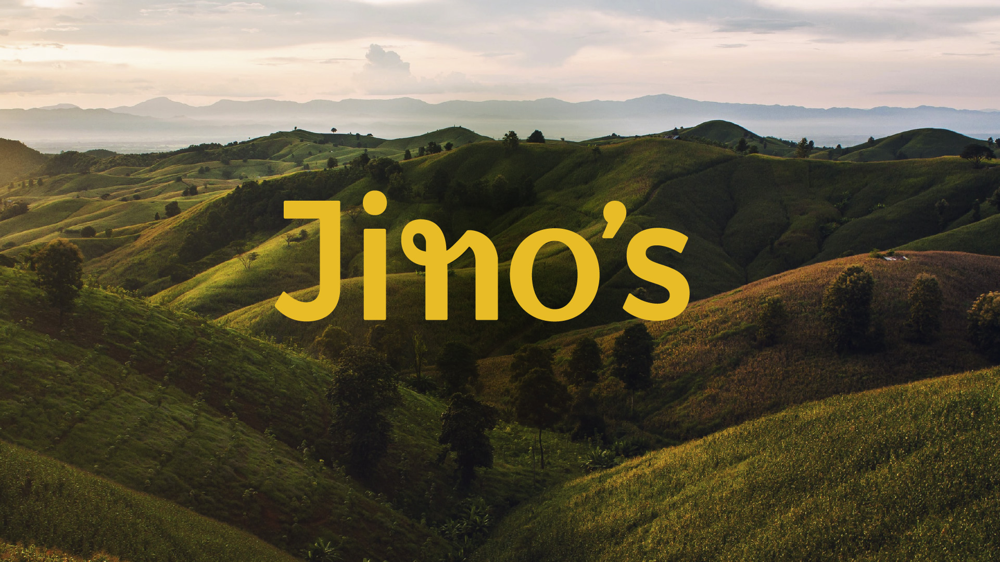
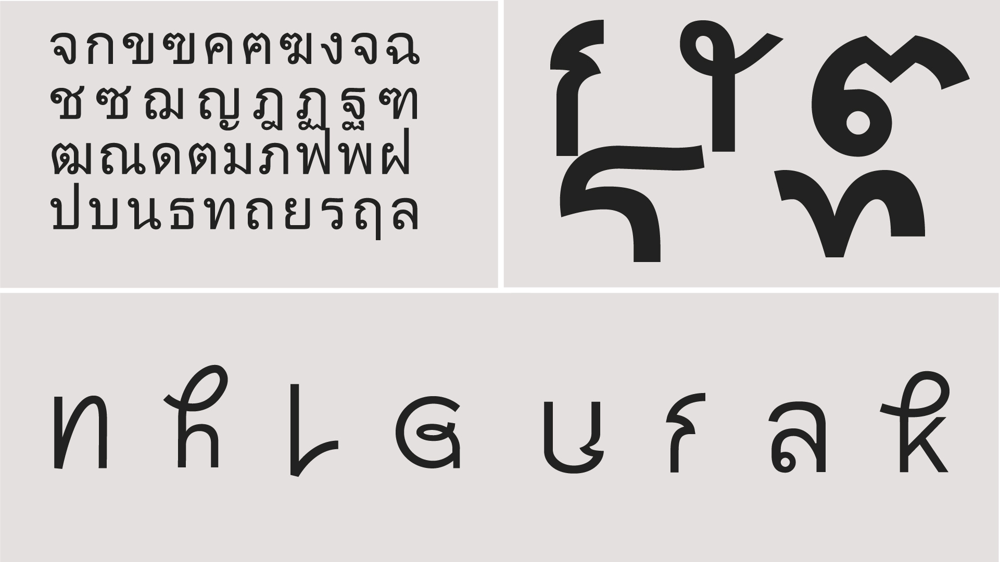

Jino's Thai Café is Headingley's oldest family-run Thai restaurant. It celebrates the heritage of owner Malinee who moved from her home town Chiang Mai, in Northern Thailand, to Leeds over 18 years ago.
The restaurant is a staple in the popular student area of Leeds but it was getting more and more competition from rise of Thai businesses popping up all over England.
The Opportunity
During our initial conversation with the people behind Jino's, we quickly uncovered their love for their heritage in Northern Thailand and its delicious food.
We fine-tuned their vision and created a clearer direction for the brand to differentiate itself from its competitors and set a new goal for Thai restaurants - not all have to be about the busy city life in Bangkok.
Jino's Thai Café differentiates itself by celebrating the lush greenery you find all over Northern Thailand and. Its visual identity needed to match this in an expressive yet friendly way. Instead of stealing attention, it needed to lift and put the designs and object in the centre of attention.


A Unique typeface
The logotype and typeface is built finding inspiration in the Thai language.
Using glyphs from the Thai alphabet in the wordmark and typeface expresses diversity in a characteristic and intriguing manner, making each variation peculiar in its own way. The trick was making sure that everything was still very legible.